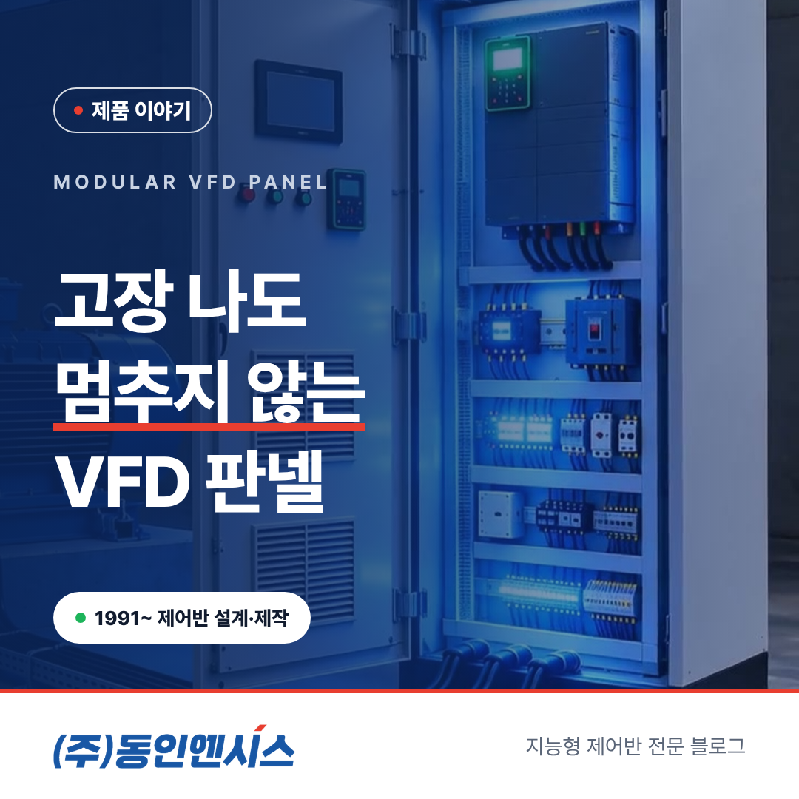
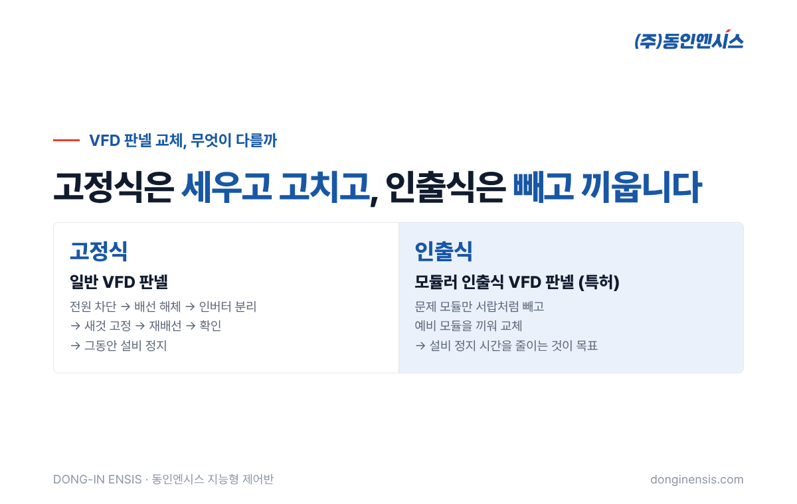
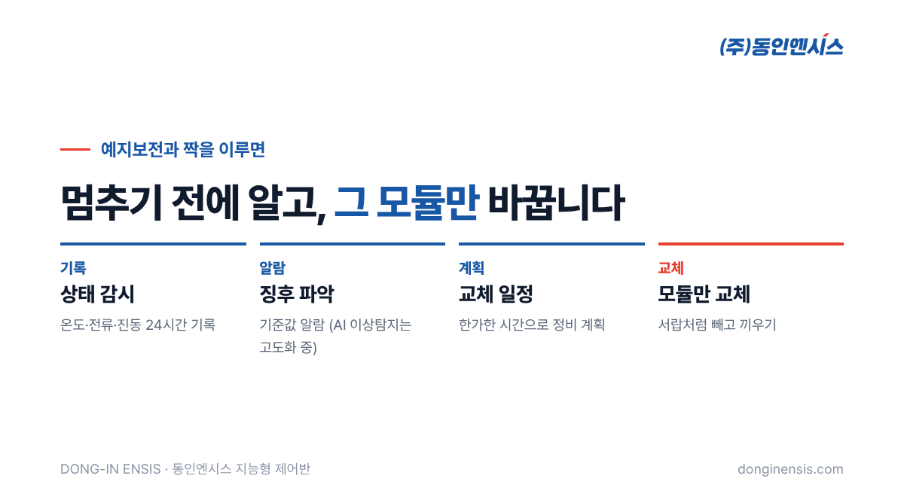

펌프나 송풍기의 속도를 조절하는 인버터가 고장 나면, 대개 그 설비가 통째로 멈춥니다. 부품을 바꾸는 동안 라인 전체가 기다려야 하는 경우도 적지 않습니다. 이 글에서는 인버터 판넬을 수없이 짜 온 제어반 제작사 동인엔시스가 특허로 등록한 모듈러 인출식 VFD 판넬의 출발점과, 기존 판넬과 달라지는 점을 쉽게 풀어 보겠습니다.
VFD는 Variable Frequency Drive의 줄임말로, 현장에서는 흔히 인버터라고 부릅니다. 모터에 들어가는 전기의 주파수를 바꿔 회전 속도를 조절하는 장치입니다. 펌프 유량을 맞추고, 송풍기 바람 세기를 조절하고, 모터를 부드럽게 출발·정지시키는 일을 모두 이 장치가 맡습니다.
그만큼 설비 운전의 한가운데에 있는 장치입니다. VFD가 멈추면 모터가 멈추고, 모터가 멈추면 그 설비가 맡은 공정이 멈춥니다. 공정 앞단의 펌프나 송풍기라면 뒤쪽 라인까지 줄줄이 기다리게 됩니다.
VFD는 내부에 전력 반도체와 냉각팬, 콘덴서 같은 부품이 들어 있어, 오래 쓰면 열과 먼지, 부품 노화 때문에 언젠가는 손을 봐야 하는 장치이기도 합니다.
일반적인 VFD 판넬은 인버터와 차단기, 배선이 한 함 안에 고정돼 있습니다. 인버터에 문제가 생기면 전원을 내리고, 배선을 풀고, 고정 나사를 풀어 인버터를 떼어 낸 뒤 새것을 다시 붙이고 배선을 연결해야 합니다.
이 과정이 생각보다 오래 걸립니다. 예비품이 창고에 있어도 교체와 배선 확인, 시운전까지 마쳐야 다시 돌릴 수 있습니다. 그동안 설비는 멈춰 있습니다. 담당자 입장에서는 "고장 난 부품은 하나인데 왜 설비 전체가 이렇게 오래 서 있어야 하나"라는 답답함이 생깁니다. 게다가 급하게 교체하다 보면 배선을 잘못 연결하거나 설정값을 빠뜨리는 실수가 생기기 쉽고, 그 실수를 찾느라 시간이 더 늘어나기도 합니다.

'인출식'은 서랍처럼 앞으로 빼낼 수 있는 구조를 말합니다. 큰 배전반에서 차단기를 서랍처럼 넣고 빼는 방식은 이미 익숙한데, 이 생각을 VFD 판넬에 가져온 것이 모듈러 인출식 VFD 판넬입니다.
핵심은 두 가지입니다.
이렇게 하면 고장 징후가 보이는 모듈만 바꾸고, 설비 전체를 오래 세우지 않는 것을 목표로 할 수 있습니다. 특허의 세부 구조는 이 글에서 다루지 않지만, 출발점은 "고장 난 곳만, 빠르게"라는 단순한 생각입니다.
Photorealistic photo of a modern light-grey industrial switchgear-style cabinet in a clean Korean factory electrical room, one drawer-type module partially pulled out on rails showing a variable frequency drive inside, other modules closed with small indicator lamps, an engineer's gloved hand on the drawer handle, bright even lighting, no brand logos, no readable text. 3:2 landscape.
인버터는 대개 갑자기 멈추는 것처럼 보이지만, 그 전에 작은 신호를 보내는 경우가 많습니다. 현장에서 흔히 보는 것들은 이렇습니다.
이 신호들을 사람이 매일 일일이 챙기기는 어렵습니다. 판넬 안팎의 온도와 전류를 기록으로 남겨 두면, 이런 변화가 언제부터 시작됐는지 되짚어 볼 수 있고, 모듈을 미리 바꿀 시점을 판단하는 근거가 됩니다.
모듈을 빨리 바꿀 수 있어도, 언제 바꿔야 할지 모르면 결국 고장이 난 뒤에야 움직이게 됩니다. 그래서 이 구조는 예지보전과 짝을 이룹니다.
동인엔시스 지능형 제어반은 설비를 제어하면서 모터 온도, 전류, 진동 같은 값을 하루 종일 기록하고, 정해 둔 기준을 넘으면 알람을 보냅니다. 이 기준값 알람은 설치 직후부터 바로 쓸 수 있습니다. 여기에 더해 평소와 다른 미세한 변화를 AI로 찾아내는 이상탐지는 지금 실증을 거치며 다듬고 있는 단계입니다.
고장 징후를 미리 알고, 해당 모듈만 계획된 시간에 바꾼다. 이 두 가지가 맞물리면 "고장 나면 멈추는 설비"에서 "멈추기 전에 손보는 설비"로 한 걸음 옮겨 갈 수 있습니다.

모든 설비에 인출식 구조가 필요한 것은 아닙니다. 특히 효과가 큰 곳은 이런 현장입니다.
인출식 판넬은 기구 설계와 전기 설계, 인버터 설정이 함께 맞아떨어져야 제대로 동작합니다. 동인엔시스는 제어반 설계·제작부터 PLC·인버터 프로그램, 시운전까지 직접 맡아 왔고, 슈나이더 일렉트릭 공식 SI 파트너로서 인버터 설정과 연동 경험도 쌓아 왔습니다. 기구와 전기, 프로그램을 한 팀이 맡으면 모듈을 빼고 끼울 때 생길 수 있는 어긋남을 처음부터 줄일 수 있습니다.
Photorealistic photo of a long row of light-grey motor control cabinets in an industrial electrical room, doors closed with small touch displays and status lamps, cable trays above, polished floor reflecting the lights, wide angle, no people, no brand logos, no readable text. 3:2 landscape.
Q. 기존 VFD 판넬을 인출식으로 바꿀 수 있나요? 판넬 크기와 설치 공간, 설비 구성에 따라 다릅니다. 현장을 보고 교체 범위를 함께 검토합니다.
Q. 모듈 교체는 누가 하나요? 교체 절차를 고객사 담당자에게 교육하고, 필요하면 현장 대응도 지원합니다. 처음 몇 번은 함께 해 보며 익히는 것을 권합니다.
Q. 예비 모듈은 몇 개나 두어야 하나요? 같은 용량의 인버터가 몇 대인지, 설비가 멈췄을 때 손해가 얼마나 큰지에 따라 달라집니다. 같은 모듈을 쓰는 설비가 많을수록 예비 모듈 하나가 지켜 주는 범위가 넓어집니다. 구성 단계에서 설비 목록을 보고 함께 정합니다.
Q. AI가 언제 바꿀지 정확히 알려 주나요? 지금 바로 쓸 수 있는 것은 기준값을 넘을 때의 알람입니다. AI 이상탐지는 실증 단계라, 예측 시점을 단정해서 말씀드리지는 않습니다.
모듈러 인출식 VFD 판넬은 "고장 난 곳만 빠르게 바꾸자"는 생각을 판넬 구조로 옮긴 것입니다. 여기에 설비 데이터로 미리 알아채는 구조를 더하면, 설비가 서 있는 시간을 줄이는 데 한층 가까워집니다.
우리 공장의 VFD 판넬에 적용할 수 있을지 궁금하시면, 대상 설비를 적어 진단을 요청해 주세요.
제품 상담 051-862-3668 · dongin@donginmne.com
아래 질문 중 하나에 실제 경험으로 답해 본문 적당한 곳에 넣어 주세요. 사람이 직접 쓴 문장이 들어가면 네이버에서 저품질 위험이 줄고 노출에 도움이 됩니다.